Seagrass
filefish
Acreichthys tomentosus*
Family Monacanthidae
updated
Sep 2020
Where
seen? This filefish with with a 'smiley' on the side of
the body is commonly seen on many of our shores, among seagrasses and
seaweeds on coral rubble.
Features: To 12cm, those seen about 7cm. An irregular curved yellow or
white line along the front of the body from the gill opening to the
middle of the upper body, that resembles a 'smile'. Body in a wide
variety of colours and patterns, usually irregular blotches. Adult
males have bristles near the tail fin arranged a well-defined central
oblong patch.
More on how to tell apart filefishes. |
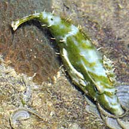
Tanah Merah, Jun 09 |
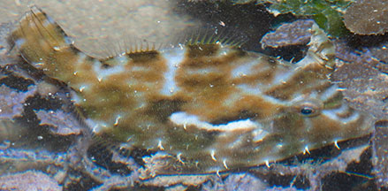
Pale or white curved line from gills
to middle of the upper body.
Tanah Merah, Aug 09 |
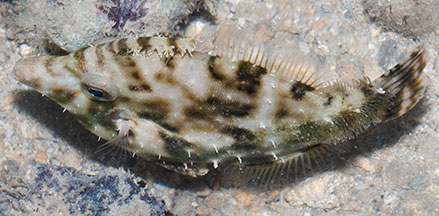
Adult males with bristles in an
oblong patch near the tail fin.
Sisters Island, Jul 07
|
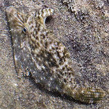
Tanah Merah, Jul 11 |
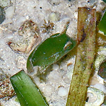
Same colour, size, shape as a seagrass leaf!
Cyrene, Jul 25
Photo shared by Chay Hoon on facebook. |
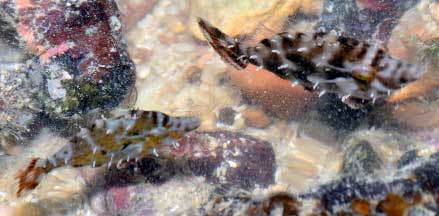
Pulau Biola,
Photo shared by Loh Kok Sheng on facebook. |
| What does it eat? It feeds on
small creatures that live on the bottom such as amphipods,
worms and snails. |
*Species are difficult
to positively identify without close examination.
On this website, they are grouped by external features for convenience of
display.
| Seagrass
filefishes on Singapore shores |
| Other sightings on Singapore shores |
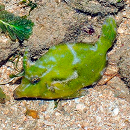
Chek Jawa, Jun 14
Photo shared by Loh Kok Sheng on his blog. |
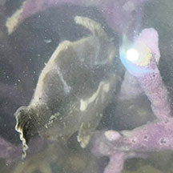
Beting Bronok, Jun 25
Photo shared by Kelvin Yong on facebook. |
|
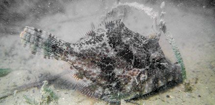
East Coast Park, Aug 20
Photo shared by Vincent Choo on facebook. |
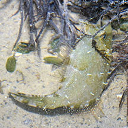
East Coast-Marina Bay, Nov 17
Photo shared by Loh Kok Sheng on facebook |
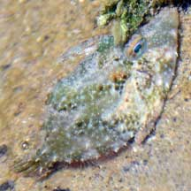
Berlayar Creek, Oct 21
Photo shared by Loh Kok Sheng on facebook. |
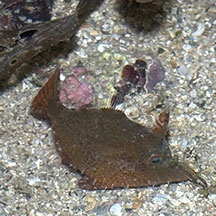
Labrador, Oct 25
Photo shared by Lon Voon Ong on facebook. |
|
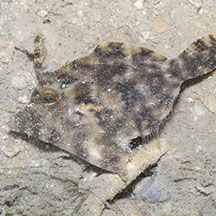
Sentosa Serapong, May 16
Photo shared by Marcus Ng on facebook. |
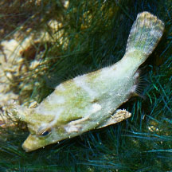
Sentosa Tg Rimau, Oct 25
Photo shared by Loh Kok Sheng on facebook. |
|
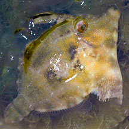
Lazarus Island, Feb 11
Photo
shared by Russel Low on facebook. |
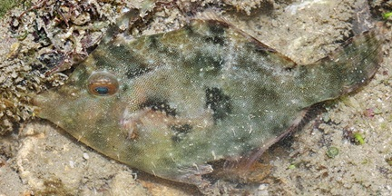
Lazarus Island, Feb 11
Photo
shared by James Koh on his
blog |
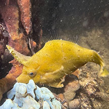
Small SIsters Island, Oct 25
Photo shared by Tammy Lim on facebook. |
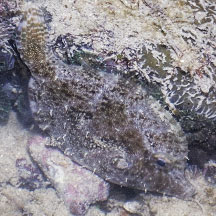
Big Sisters, Aug 25
Photo shared by Richard Kuah on facebook. |
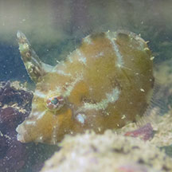
Pulau Jong, Aug 25
Photo
shared by Jayden Kang on facebook. |
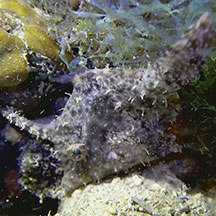
Pulau Semakau (North), Apr 16
Photo shared by Jianlin Liu on facebook. |
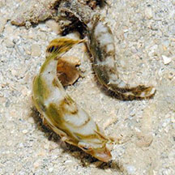
Terumbu Semakau, Apr 13
Photo shared by Loh Kok Sheng on flickr. |
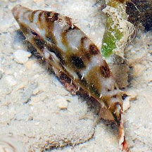
Terumbu Raya, Jul 11
Photo shared by Loh Kok Sheng on flickr. |
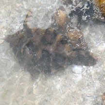
Terumbu Bemban, Jun 17
Photo shared by Abel Yeo on facebook. |
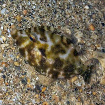
Terumbu Pempang Laut, May 19
Photo shared by Kelvin Yong on facebook. |
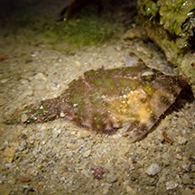
Terumbu Pempang Kecil, Jan 15
Photo shared by Jianlin Liu on facebook. |
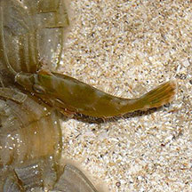
Raffles Lighthouse, Aug 08
Photo shared by Loh Kok Sheng on flickr. |
|
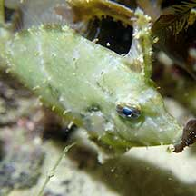
Pulau Salu, Apr 21
Photo shared by Jianlin Liu on facebook. |
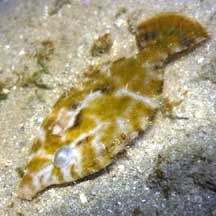
Pulau Sudong, Dec 09
Photo shared by Ivan Kwan on his
flickr. |
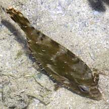
Pulau Pawai, Dec 09 |
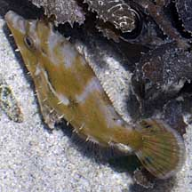
Pulau Senang, Jun 10 |
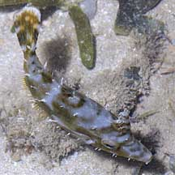
Pulau Senang, Jun 10 |
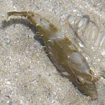
Pulau Senang, Jun 10 |
Links
- Seagrass
Filefish (Acreichthys tomentosus) Lim, Kelvin K. P.
& Jeffrey K. Y. Low, 1998. A
Guide to the Common Marine Fishes of Singapore. Singapore
Science Centre. 163 pp.
- Monocanthus
sp. Tan, Leo W. H. & Ng, Peter K. L., 1988. A
Guide to Seashore Life. The Singapore Science Centre,
Singapore. 160 pp.
- Acreichthys tomentosus on IUCN Red List.
- Bristle-tailed
file-fish
(Acreichthys
tomentosus)
from FishBase: Technical
fact sheet on the family, including fact sheet
- Volume
6: Bony fishes part 4 (Labridae to Latimeriidae), estuarine crocodiles,
sea turtles, sea snakes and marine mammals FAO Species Identification
Guide for Fishery Purposes The Living Marine Resources of the
Western Central Pacific.
References
- Lieske, Ewald
and Robert Myers. 2001. Coral
Reef Fishes of the World
Periplus Editions. 400pp.
|
|
|